Publication
Beyer, D., Gurevich, S., Mueller, S., Chen, H.T., and Baudisch, P.
Platener: Low-Fidelity Fabrication of 3D Objects by Substituting 3D Print with Laser-Cut Plates.
In Proceedings of
CHI ’15
, pp. 1799-1806.
DOI
Paper
Video
Slides
Sponsors
 Press
Video
Slides
Press
Video
Slides


1 / 80

2 / 80

3 / 80

4 / 80

5 / 80

6 / 80

7 / 80

8 / 80

9 / 80

10 / 80

11 / 80

12 / 80

13 / 80

14 / 80

15 / 80

16 / 80

17 / 80

18 / 80

19 / 80

20 / 80

21 / 80

22 / 80

23 / 80

24 / 80

25 / 80

26 / 80

27 / 80

28 / 80

29 / 80

30 / 80

31 / 80

32 / 80

33 / 80

34 / 80

35 / 80

36 / 80

37 / 80

38 / 80

39 / 80

40 / 80

41 / 80

42 / 80

43 / 80

44 / 80

45 / 80

46 / 80

47 / 80

48 / 80

49 / 80

50 / 80

51 / 80

52 / 80

53 / 80

54 / 80

55 / 80

56 / 80

57 / 80

58 / 80

59 / 80

60 / 80

61 / 80

62 / 80

63 / 80

64 / 80

65 / 80

66 / 80

67 / 80

68 / 80

69 / 80

70 / 80

71 / 80

72 / 80

73 / 80

74 / 80

75 / 80

76 / 80

77 / 80

78 / 80

79 / 80

80 / 80

Platener:
Low-Fidelity Fabrication of 3D Objects by Substituting 3D Print with Laser-Cut Plates
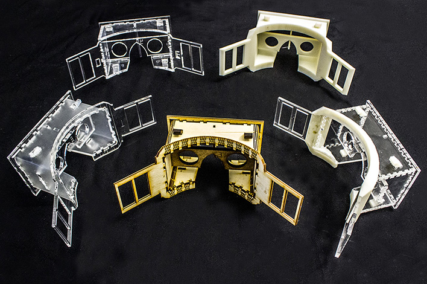
Platener is a system that allows quickly fabricating intermediate design iterations of 3D models, a process also known as low-fidelity fabrication. Platener achieves its speed-up by extracting straight and curved plates from the 3D model and substituting them with laser cut parts of the same size and thickness. Only the regions that are of relevance to the current design iteration are executed as full-detail 3D prints. Platener connects the parts it has created by automatically inserting joints. To help fast assembly it engraves instructions. Platener allows users to customize substitution results by (1) specifying fidelity-speed tradeoffs, (2) choosing whether or not to convert curved surfaces to plates bent using heat, and (3) specifying the conversion of individual plates and joints interactively.
Platener is designed to best preserve the fidelity of functional objects, such as casings and mechanical tools, all of which contain a large percentage of straight/rectilinear elements. Compared to other low-fab systems, such as faBrickator and WirePrint, Platener better preserves the stability and functionality of such objects: the resulting assemblies have fewer parts and the parts have the same size and thickness as in the 3D model.
To validate our system, we converted 2.250 3D models downloaded from a 3D model site (Thingiverse). Platener achieves a speed-up of 10 or more for 39.5% of all objects.
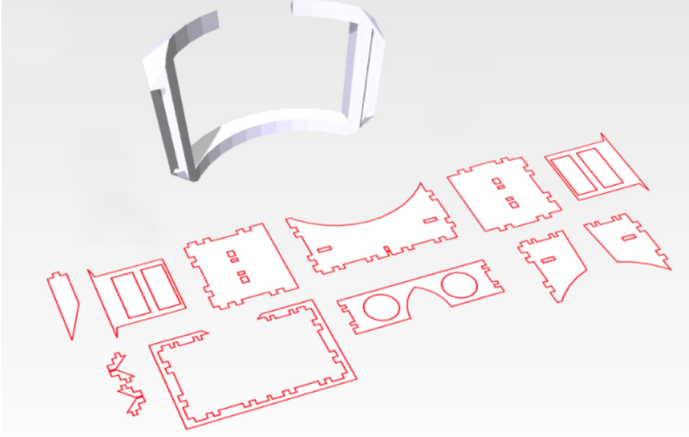
Figure 2: Platener exports 3D printable parts and laser-cut parts as .stl and .svg files.
Adapting the conversion to the current design phase
To best suit the needs of the current design phase, Platener allows users to convert 3D models under different settings. For an early design phase, for example, users may convert their models with speed in mind; in later phases they may gradually shift the emphasis to fidelity. Note that here fidelity refers not only to shape but also to other physical property such as appearance, structure, and material.
As an example, Figure 3 shows three different versions of the head-mounted display. They were generated from the same 3D model, but with different fidelity-speed settings.
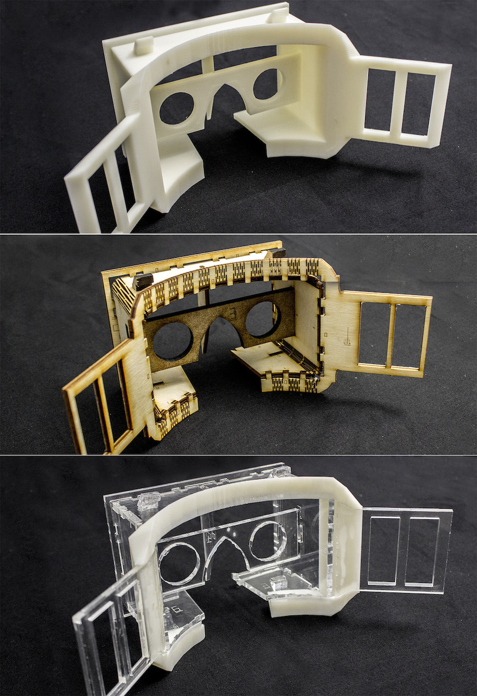
Figure 3: Platener’s user interface provides users with a global slider to define the fidelity-speed trade-off.
Platener allows users to specify these trade-off settings using a global slider.
Speed-fidelity: Setting this slider all the way to “fidelity” (Figure 4a) produces an object that is all 3D printed, which trivially preserves fidelity, but obviously at the expense of having no speed-up. Moving the slider towards “speed” causes Platener to initially replace very large regions with individual laser-cut plates (Figure 4b); then more and more regions get replaced, resulting in increasingly higher speed-ups (Figure 4c). Platener performs this in interactive speed, i.e., as the user is dragging the slider, Platener continuously updates the model. This allows users to see the changes right away and thus to quickly find the conversion that best suits their needs.
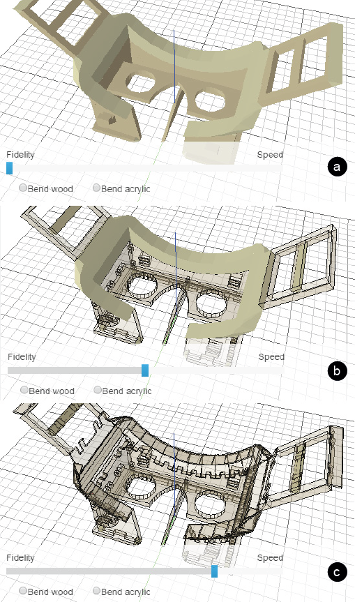
Figure 4: Platener’s user interface provides users with a global slider to define the fidelity-speed trade-off
Curved surfaces: Platener also provides options for handling curved plates. When the curved plate option is deactivated, Platener approximates curved plates using individual plates connected by finger joints (Figure 4c). Activating the curved plate option causes Platener to convert cylindrically curved regions in the 3D model to one plate that can be laser-cut and bent.
Curved plates come in two styles: The first option bend acrylic fabricates a flattened version of the respective surface using the laser cutter that can then be bent using a heat gun. As illustrated by Figure 5, users (a) cut the pieces, (b) heat them up using a heat gun or strip heater, (c) pre-shape them along the dashed instruction lines Platener provided, and (d) press them into the corresponding positions in the model, which gives them the desired shape.
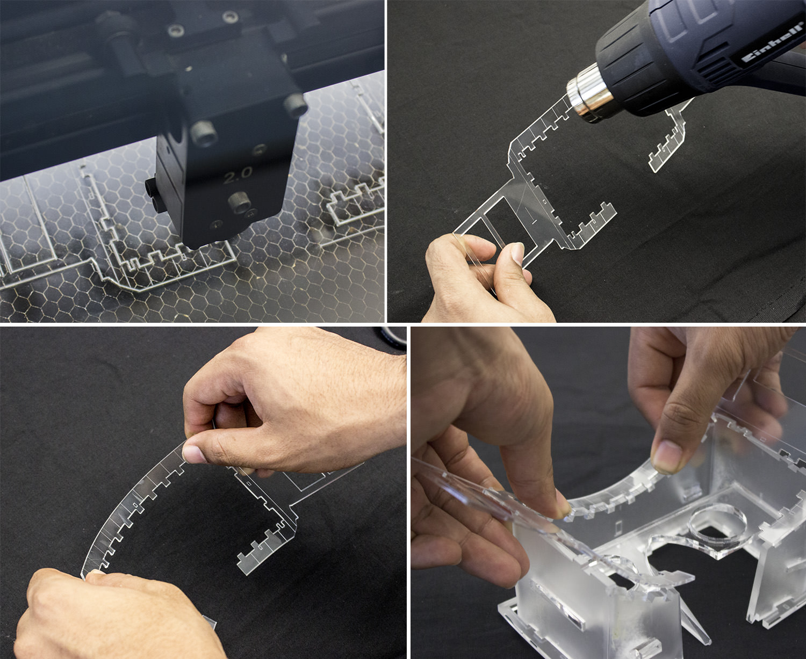
Figure 5: Creating a curved plate from acrylic: (a) cut plate, (b) heat it using a heat gun, (c) pre-curve it, and (d) press it into position to give it the right shape.
The second curved plate option uses a wooden living hinge. As illustrated by Figure 6, for this to work, Platener cuts a dense pattern of living hinges into the plate. This results in a plate that is flexible along the intended dimension. In this case, users only have to (a) cut the curved plate and then (b) mount it using the provided finger joints.
 Figure 6: Creating a curved plate from wood. (a) Cut the object on the laser cutter, (b) mount it into position.
As shown in Figure 7, Platener helps users assemble parts by embedding matching pairs of labels.
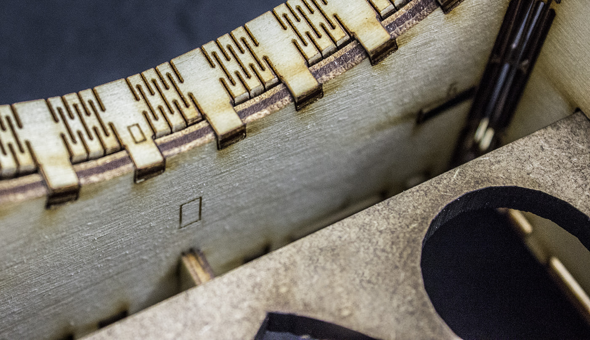
Figure 7: Platener 3D prints/engraves instructions.
Specifying the focus of the current design iteration
On top of these global settings, different design iterations tend to put the focus on different parts. Platener allows users to define such a focus by assigning a specific fabrication technique using brushes. For the head mounted display, the global threshold defines that the forehead piece should be 3D printed. Within this context, the user can now choose the focus of the current design iteration:
Case 1: The current design iteration is about some other part, such as the optical path. The forehead piece thus does not matter. In this case, the user can use the do not print brush on the forehead piece and the device will be fabricated without this part (Figure 8).
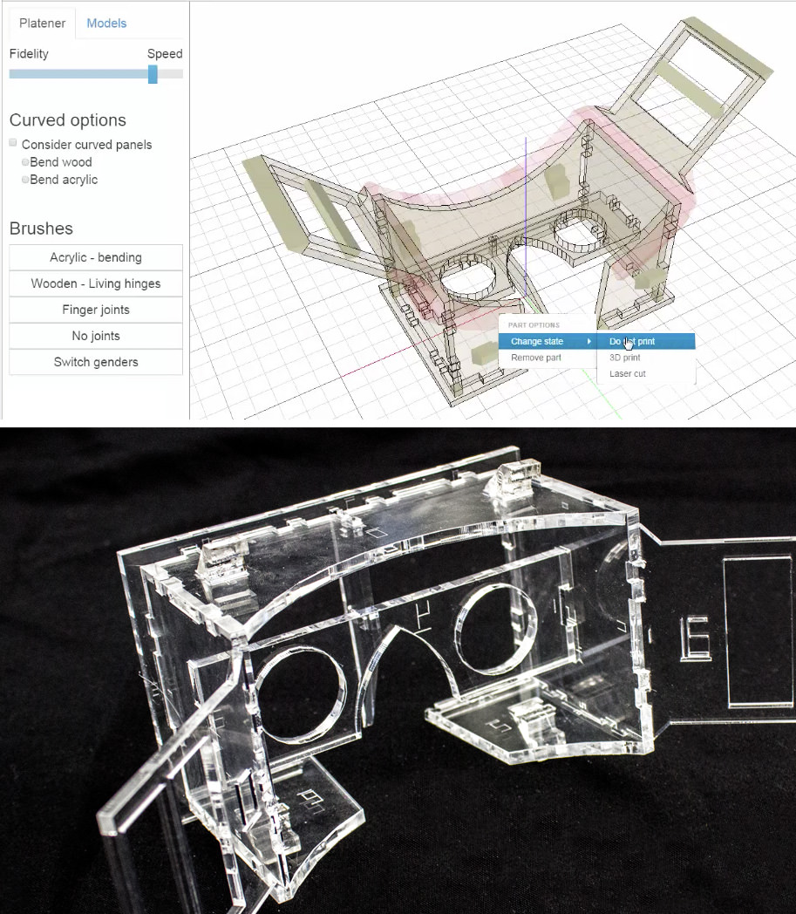
Figure 8: The design iteration does not require the head piece. The user thus uses the do not print brush.
Case 2: The current design iteration is about the ergonomics of the forehead piece, thus the contact area of the forehead piece matters. The user has a heat gun and decides to use the curve acrylic brush on the forehead piece (Figure 9).
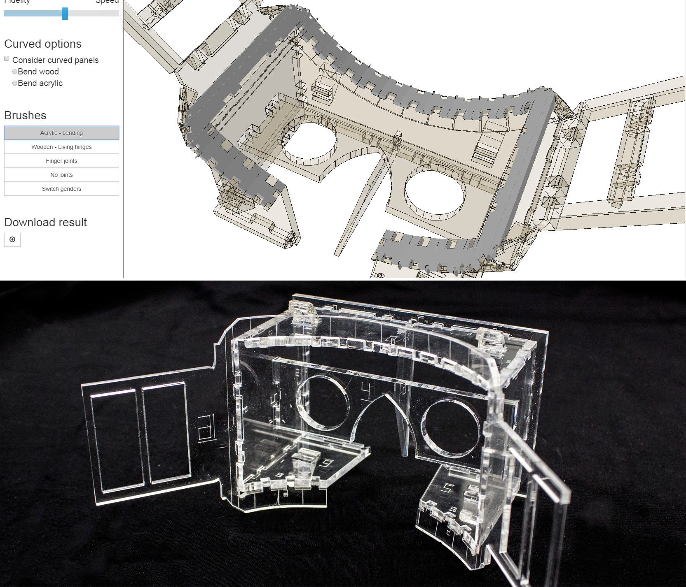
Figure 9: Overwriting the default with the curve acrylic brush to obtain a curved version for ergonomic testing.
Case 3: In this round of design, not just the ergonomics, but also the entire industrial design of the forehead piece is in focus. The user thus overwrites the setting of the forehead piece in the last iteration by using the 3D print brush, resulting in the hybrid object shown in Figure 1c.
Case 4: In yet another round of design, the mechanics and the stability of the object are in focus. Per default, Platener has chosen to represent the four vertical edges of the casing as finger joints. These are easy to assemble, but brittle and thus not a good approximation for the stability of a 3D print. The user handles this by customizing these edges/ connectors, similar to how one customized plates. As shown in Figure 10a, the user uses the bend acrylic brush and brushes across the connectors. This causes Platener to merge the four wall segments into a single long strip (Figure 10b). The assembled result is shown in Figure 10c—a version of the head mounted display that is sturdier than any of the converted versions we showed earlier, as its main body consists of only three pieces.
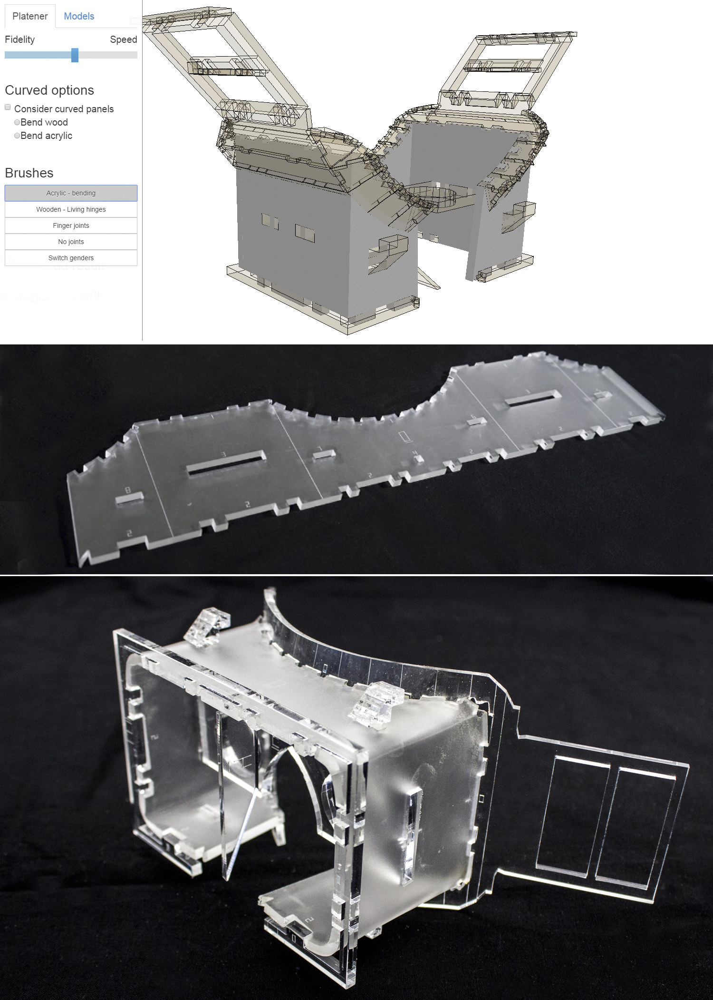
Figure 10: Using the bend acrylic brush, the user defines the casing as being made from one piece, which makes it sturdier.
Comparison to other low-fab techniques
Compared to low-fab techniques from the related work, Platener generally better preserves a model’s geometry. We illustrate this at the example of the three objects used in the faBrickator paper, i.e., the penny ballista (Figure 11), the soap dispenser (Figure 12), and the head mounted display (Figure 13). Platener objects are generally sturdier as they are made from fewer pieces than when using building blocks (penny ballista: 17 plates vs 99 Lego, soap dispenser: 21 plates vs 53 Lego, head mounted display: 9 plates vs 160 Lego). The curved surface, despite requiring more manual effort, results in particularly sturdy results.
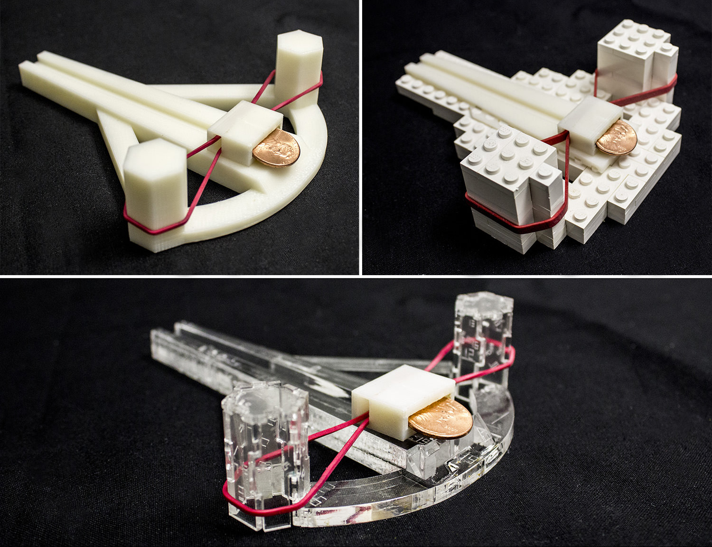
Figure 11: Penny ballista: (a) original 3D model, (b) faBrickator, (c) Platener.
Platener is intended to be a low-fab technique, i.e., users are supposed to use it for intermediate test prints while still iterating, and to only 3D print the final version. That said, some objects produced by Platener are of sufficient fidelity that users may choose to use the Platener conversion to fabricate also the final output.
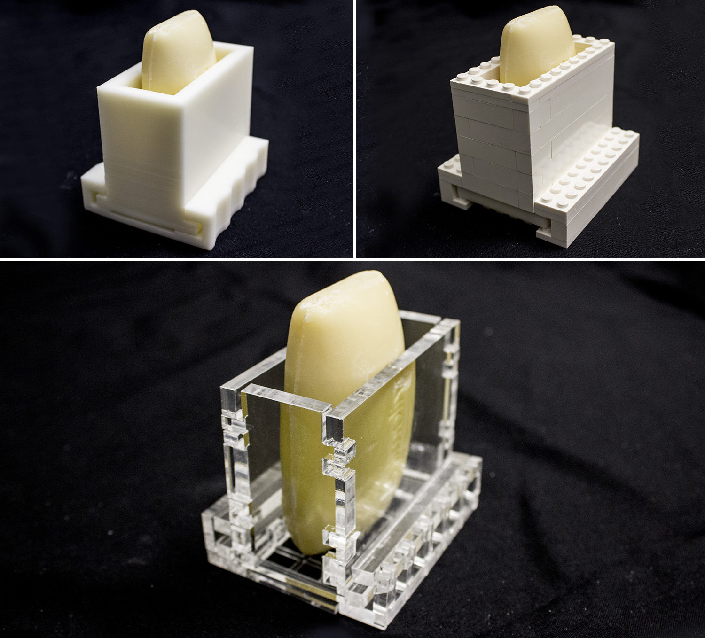
Figure 12: Soap dispenser: (a) original 3D model, (b) faBrickator, (c) Platener.
On the flipside, Platener is subject to the following limitations: The thickness of the extracted plates is limited to the capabilities of the laser cutter (e.g. 10mm maximum plate thickness on our ULS PLS6.150D laser cutter). While Platener speeds up design iteration of functional objects, it is less suitable for objects that are solely defined by their shape, such as 3D scans of people.
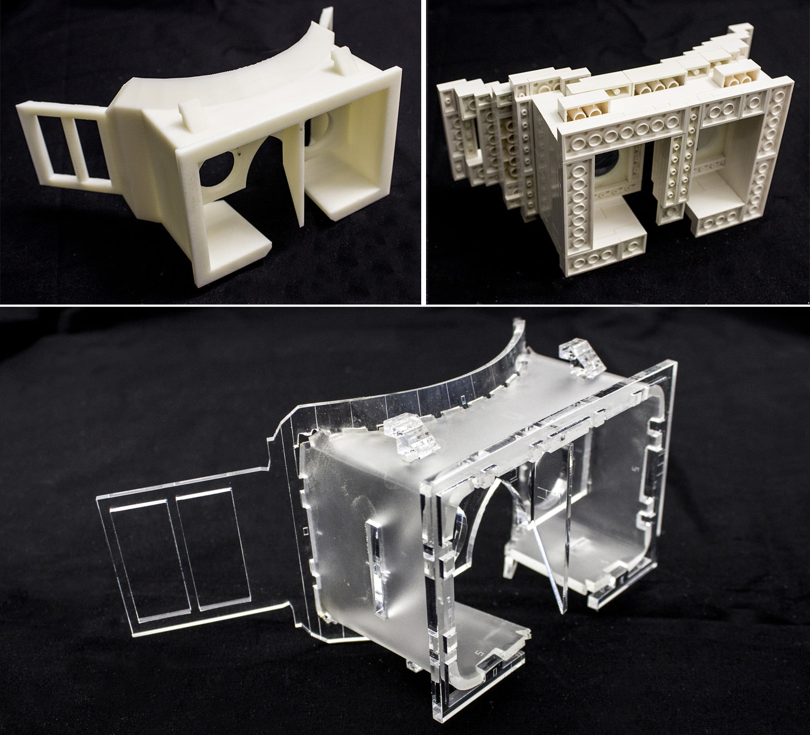
Figure 13: Head mounted display: (a) original 3D model, (b) faBrickator, (c) Platener.
Implementation
This section describes Platener’s core data structure and the implementation of the processing pipeline.
#1 Mesh Segmentation
The mesh segmentation algorithm takes a 3D printable manifold mesh as input and outputs laser-cuttable plates and 3D printable parts. Platener then generates the plate graph of the 3D model according to the adjacency relationship of these segments.
The segmentation algorithm first extracts all flat planes from the 3D mesh then identifies plates by iteratively grouping plane pairs that are parallel, have an opposite normal, and are within distance d. The variable d represents the thickness of the plate and users manually configure it according to the laser cutting material. Each plate consists of two planes. The size and shape of the plate are determined by projecting both planes into 2D and intersecting them. We repeat the algorithm with all planes that remain after intersection until no more planes can be converted to plates. After extracting all plates, the algorithm labels the remaining parts of the 3D mesh as to 3D print.
#2 Plate Graph Generation
After the mesh segmentation, Platener constructs a plate graph that records the fabrication method for each segment and joints between them. As illustrated by Figure 14, each node in the plate graph represents one part of the 3D model and each edge represents a connector between two plates. Each note has one of the three states: 3D print, laser-cut, or ignore. Each edge, i.e. connector, has one of the five states: no connector, bending connector, finger joint, interlocking joint, bending connector, or glue connector.
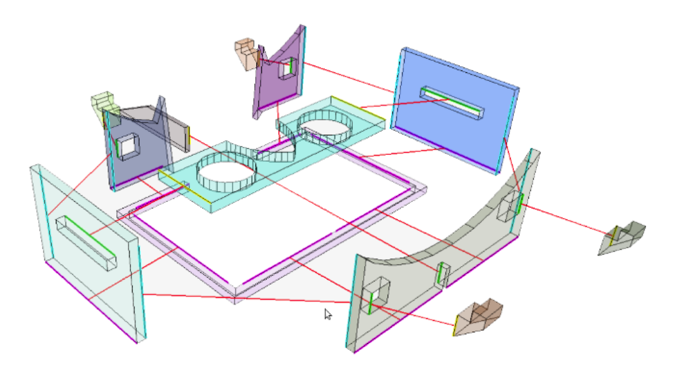
Figure 14: The plate graph represents the 3D model as a graph of nodes (plates) with edges (connectors).
Initially, Platener labels all nodes as 3D print and all edges as no connector. As users move the fidelity-speed slider towards speed, Platener gradually labels the largest laser-cuttable segments as laser-cut and their adjacent edges as finger joints. Similarly, as users manually specify a fabrication method for each part, Platener interactively updates the corresponding labels in the graph.
#3 Mesh Processing
At the end of the process pipeline, Platener processes the mesh segments according to the plate graph.
Unfolding Curved Parts:
When the curved plate option is activated, Platener gradually unfolds the curved segment onto a 2D plane. Platener also adds the bending lines or the living hinge pattern perpendicular to the unfolding direction. If the 3D segment cannot be unfolded without overlapping itself, Platener converts it to 3D printing as a fall back method.
Joint Generation:
According to the labels on the edges, Platener places joints between segments or merges segments into a single piece. When the edge is labeled as no connector, e.g. both nodes are 3D printed, or bending connector, e.g. users applied the bend acrylic brush on the joints, Platener merges them into one single 3D mesh or plate. When using finger joints, Platener extends the boundaries of the segments and generates finger joints on the overlapping volume. The interlocking joint label is used when there is a cross-section between two segments. In such cases, Platener creates a slit on the laser-cut piece, allowing another plate to slide into and interlock with. Finally, in case the overlapping volume is too small, Platener switches to the glue connector, i.e. creates flat surfaces on both segments that afford gluing.
Technical Evaluation
We evaluated the effectiveness of Platener by analyzing the speed-up after conversion for a range of different models. Given that Platener was designed for functional objects, such as casing and mechanical tools, we focused on 3D models that their creators described in such terms.
3D Meshes from Thingiverse
In order to obtain an objective sample, we downloaded 3D models from the online 3D model repository Thingiverse. At the day of the download, Thingiverse contained more than a hundred thousand 3D models in total.
We collected the 3D models by searching the website using the sites built-in search box and downloaded the top 200 results. In order to obtain an objective sample, we did not perform any further selection or removal of mislabeled objects at this stage, so our sample represents the “noise” level currently contained in these sites. Also note that many 3D models on Thingiverse consist of multiple 3D meshes. We processed them separately without merging them into one single 3D model.
The 10 search terms we used were box, camera, controller, gadget, gear, household, mechanical, phone, speaker, tool. We obtained an overall number of 2,250 3D meshes.
Measurements
We evaluated the effectiveness of Platener based on two measurements: (1) Fabrication Time before and after conversion, and (2) Number of pieces as a metric indicating the manual assembly effort required.
Results
Platener processed all 3D models and generated 3D printable stl files and laser-cuttable svg files. We estimated the 3D printing time with the slic3r (http://slic3r.org) g-code simulator, the laser-cut time by the length of the path contained in the svg files, and we approximated the assembly time via the simple formula of number of pieces multiplied by 15 seconds.
Figure 15 shows the time savings achieved by Platener. It shows that 39.5% of the downloaded 3D models achieve a speed up of more than 10x, which is faster than any of the systems in the related work. Another 13.4% achieve a speed up of 3-10x. 22.8% of models result in no speed up.
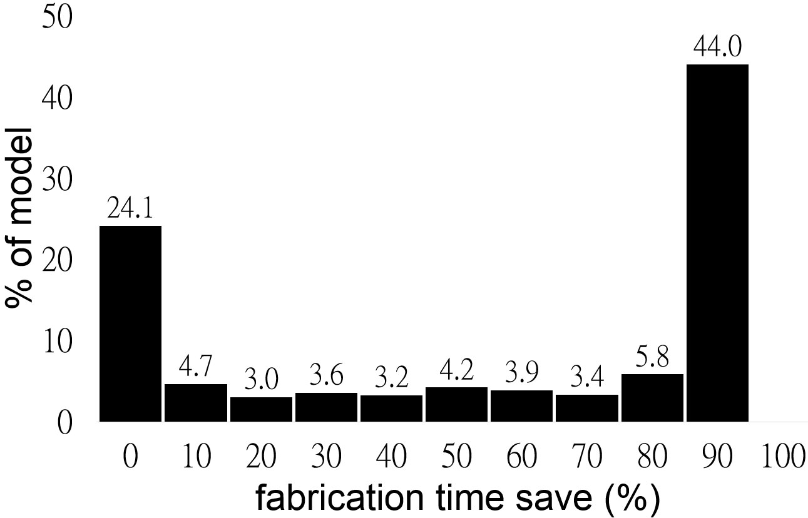
Figure 15: Fabrication time speed up.
Figure 16 shows some example objects that resulted in high speed ups (>10x). These objects consist mainly of flat pieces and contain only few parts that cannot be laser cut.
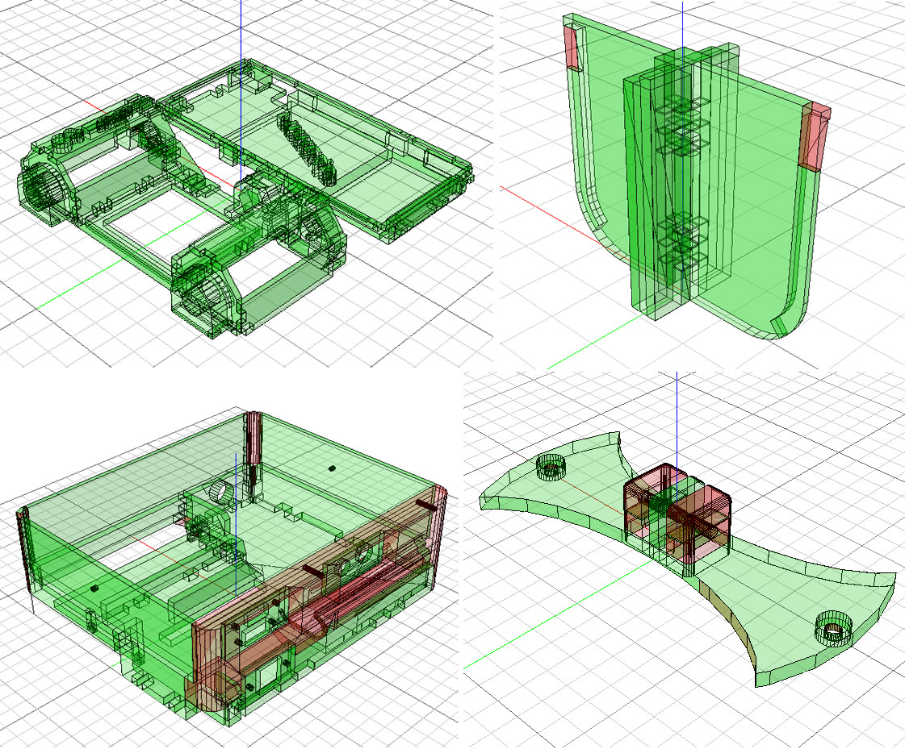
Figure 16: Some of the models that Platener fabricated 10x+ faster: (a) camera body, (b) hardware divider, (c) raspberry pi casing, (d) mount.
In contrast, Figure 17 shows two examples for which Platener was unable to produce any time savings. As expected, these objects are characterized by spherical curvature—shapes that lie outside of what Platener was designed to handle.
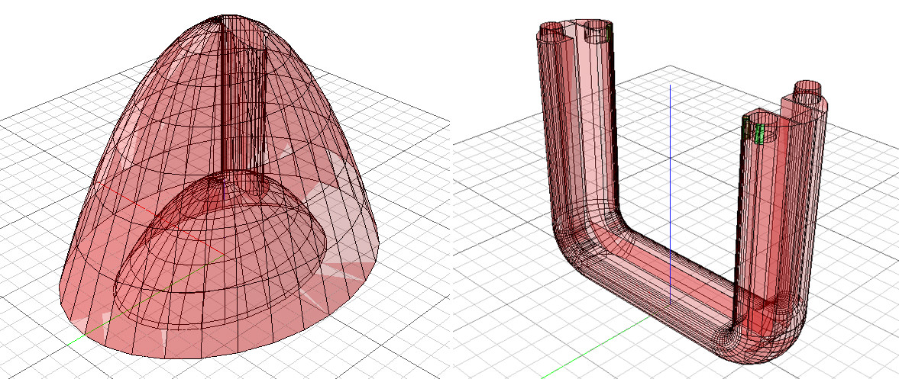
Figure 17: We would not use Platener for these objects as conversion results in no time-savings: (a) cone shaped mini heater part, (b) Kindle Fire comfort grip.
Converted objects consisted on average of 12 pieces, which we approximate with 3 minutes of assembly time.
In summary, our results show that Platener achieves faster fabrication time for many functional objects, making it a useful tool for substantially speeding up the prototyping workflow.
Figure 6: Creating a curved plate from wood. (a) Cut the object on the laser cutter, (b) mount it into position.
As shown in Figure 7, Platener helps users assemble parts by embedding matching pairs of labels.
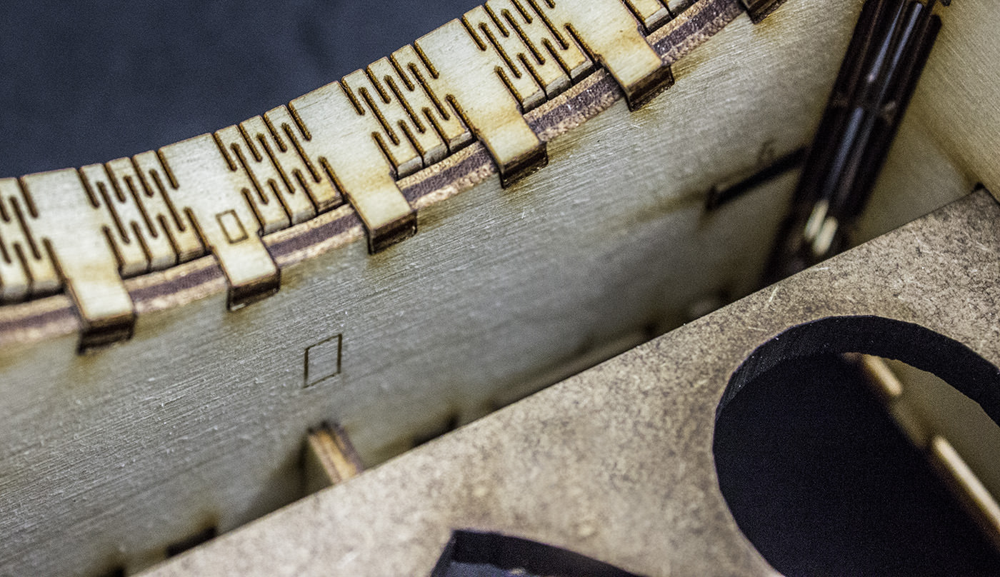
Figure 7: Platener 3D prints/engraves instructions.
Specifying the focus of the current design iteration
On top of these global settings, different design iterations tend to put the focus on different parts. Platener allows users to define such a focus by assigning a specific fabrication technique using brushes. For the head mounted display, the global threshold defines that the forehead piece should be 3D printed. Within this context, the user can now choose the focus of the current design iteration:
Case 1: The current design iteration is about some other part, such as the optical path. The forehead piece thus does not matter. In this case, the user can use the do not print brush on the forehead piece and the device will be fabricated without this part (Figure 8).
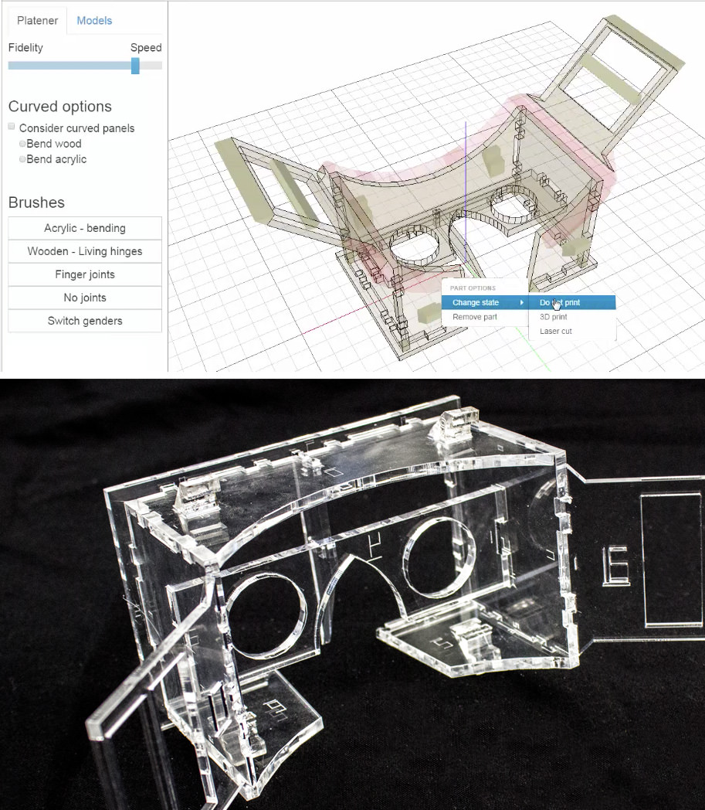
Figure 8: The design iteration does not require the head piece. The user thus uses the do not print brush.
Case 2: The current design iteration is about the ergonomics of the forehead piece, thus the contact area of the forehead piece matters. The user has a heat gun and decides to use the curve acrylic brush on the forehead piece (Figure 9).
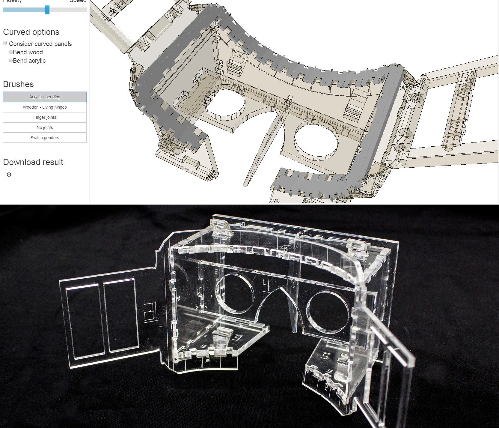
Figure 9: Overwriting the default with the curve acrylic brush to obtain a curved version for ergonomic testing.
Case 3: In this round of design, not just the ergonomics, but also the entire industrial design of the forehead piece is in focus. The user thus overwrites the setting of the forehead piece in the last iteration by using the 3D print brush, resulting in the hybrid object shown in Figure 1c.
Case 4: In yet another round of design, the mechanics and the stability of the object are in focus. Per default, Platener has chosen to represent the four vertical edges of the casing as finger joints. These are easy to assemble, but brittle and thus not a good approximation for the stability of a 3D print. The user handles this by customizing these edges/ connectors, similar to how one customized plates. As shown in Figure 10a, the user uses the bend acrylic brush and brushes across the connectors. This causes Platener to merge the four wall segments into a single long strip (Figure 10b). The assembled result is shown in Figure 10c—a version of the head mounted display that is sturdier than any of the converted versions we showed earlier, as its main body consists of only three pieces.
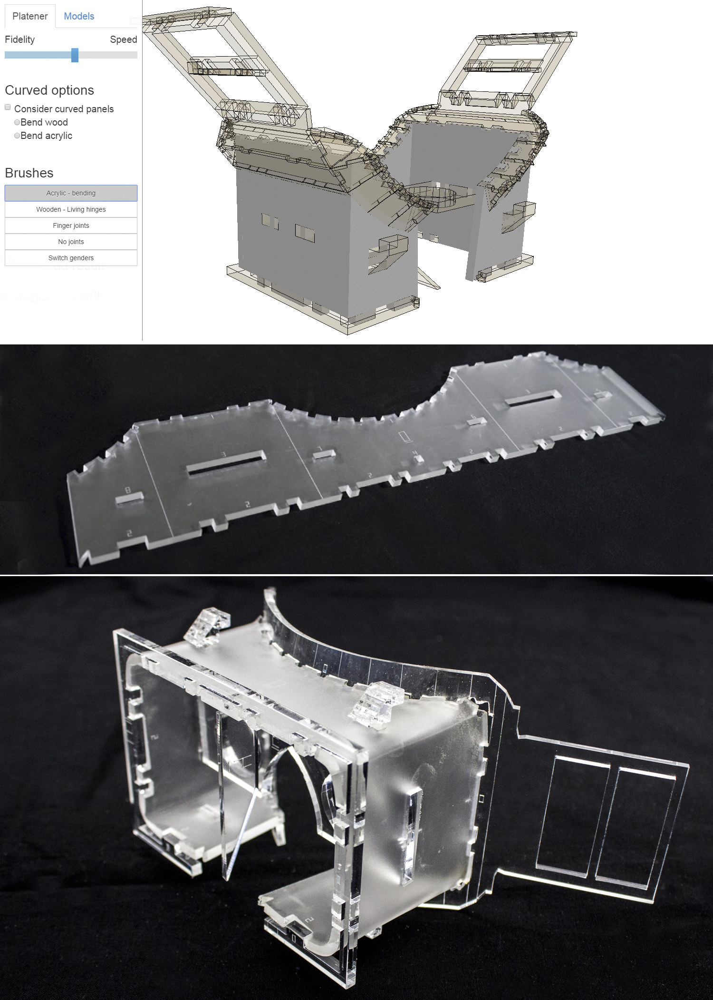
Figure 10: Using the bend acrylic brush, the user defines the casing as being made from one piece, which makes it sturdier.
Comparison to other low-fab techniques
Compared to low-fab techniques from the related work, Platener generally better preserves a model’s geometry. We illustrate this at the example of the three objects used in the faBrickator paper, i.e., the penny ballista (Figure 11), the soap dispenser (Figure 12), and the head mounted display (Figure 13). Platener objects are generally sturdier as they are made from fewer pieces than when using building blocks (penny ballista: 17 plates vs 99 Lego, soap dispenser: 21 plates vs 53 Lego, head mounted display: 9 plates vs 160 Lego). The curved surface, despite requiring more manual effort, results in particularly sturdy results.
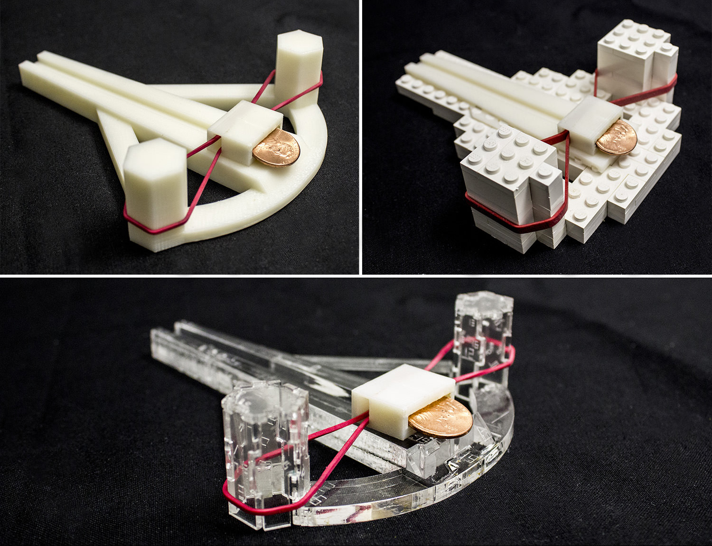
Figure 11: Penny ballista: (a) original 3D model, (b) faBrickator, (c) Platener.
Platener is intended to be a low-fab technique, i.e., users are supposed to use it for intermediate test prints while still iterating, and to only 3D print the final version. That said, some objects produced by Platener are of sufficient fidelity that users may choose to use the Platener conversion to fabricate also the final output.
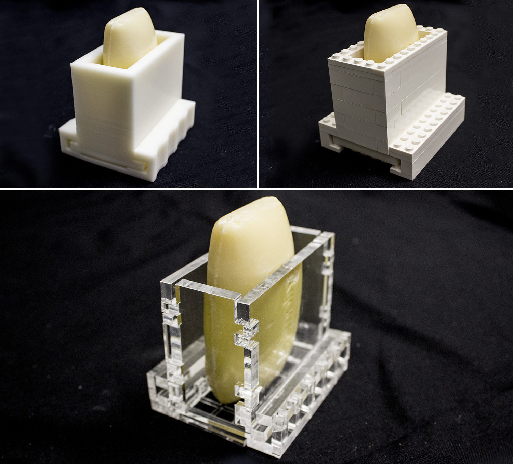
Figure 12: Soap dispenser: (a) original 3D model, (b) faBrickator, (c) Platener.
On the flipside, Platener is subject to the following limitations: The thickness of the extracted plates is limited to the capabilities of the laser cutter (e.g. 10mm maximum plate thickness on our ULS PLS6.150D laser cutter). While Platener speeds up design iteration of functional objects, it is less suitable for objects that are solely defined by their shape, such as 3D scans of people.
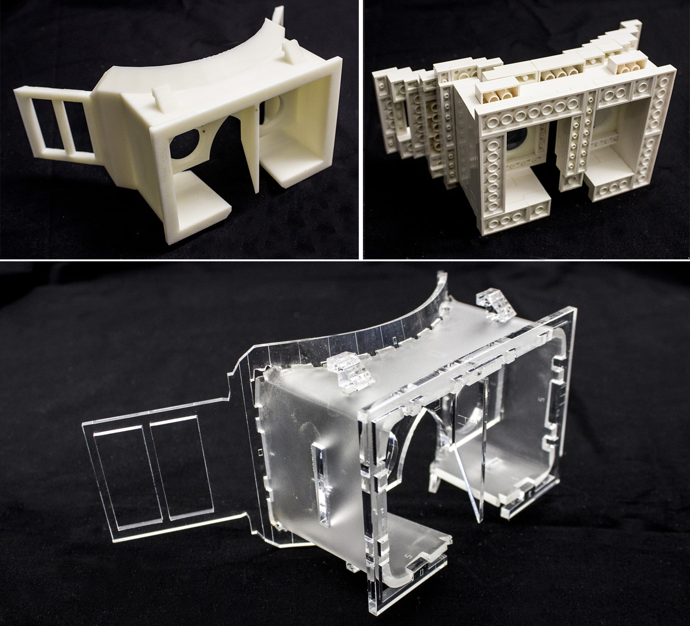
Figure 13: Head mounted display: (a) original 3D model, (b) faBrickator, (c) Platener.
Implementation
This section describes Platener’s core data structure and the implementation of the processing pipeline.
#1 Mesh Segmentation
The mesh segmentation algorithm takes a 3D printable manifold mesh as input and outputs laser-cuttable plates and 3D printable parts. Platener then generates the plate graph of the 3D model according to the adjacency relationship of these segments.
The segmentation algorithm first extracts all flat planes from the 3D mesh then identifies plates by iteratively grouping plane pairs that are parallel, have an opposite normal, and are within distance d. The variable d represents the thickness of the plate and users manually configure it according to the laser cutting material. Each plate consists of two planes. The size and shape of the plate are determined by projecting both planes into 2D and intersecting them. We repeat the algorithm with all planes that remain after intersection until no more planes can be converted to plates. After extracting all plates, the algorithm labels the remaining parts of the 3D mesh as to 3D print.
#2 Plate Graph Generation
After the mesh segmentation, Platener constructs a plate graph that records the fabrication method for each segment and joints between them. As illustrated by Figure 14, each node in the plate graph represents one part of the 3D model and each edge represents a connector between two plates. Each note has one of the three states: 3D print, laser-cut, or ignore. Each edge, i.e. connector, has one of the five states: no connector, bending connector, finger joint, interlocking joint, bending connector, or glue connector.
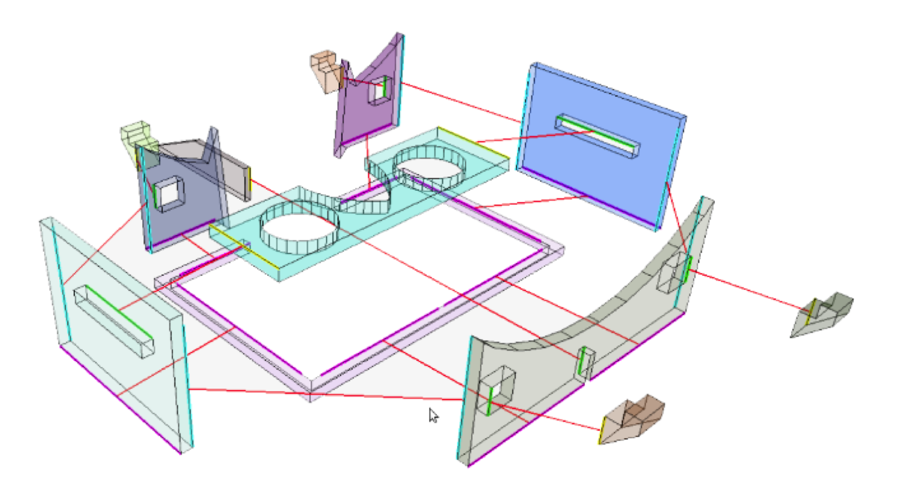
Figure 14: The plate graph represents the 3D model as a graph of nodes (plates) with edges (connectors).
Initially, Platener labels all nodes as 3D print and all edges as no connector. As users move the fidelity-speed slider towards speed, Platener gradually labels the largest laser-cuttable segments as laser-cut and their adjacent edges as finger joints. Similarly, as users manually specify a fabrication method for each part, Platener interactively updates the corresponding labels in the graph.
#3 Mesh Processing
At the end of the process pipeline, Platener processes the mesh segments according to the plate graph.
Unfolding Curved Parts:
When the curved plate option is activated, Platener gradually unfolds the curved segment onto a 2D plane. Platener also adds the bending lines or the living hinge pattern perpendicular to the unfolding direction. If the 3D segment cannot be unfolded without overlapping itself, Platener converts it to 3D printing as a fall back method.
Joint Generation:
According to the labels on the edges, Platener places joints between segments or merges segments into a single piece. When the edge is labeled as no connector, e.g. both nodes are 3D printed, or bending connector, e.g. users applied the bend acrylic brush on the joints, Platener merges them into one single 3D mesh or plate. When using finger joints, Platener extends the boundaries of the segments and generates finger joints on the overlapping volume. The interlocking joint label is used when there is a cross-section between two segments. In such cases, Platener creates a slit on the laser-cut piece, allowing another plate to slide into and interlock with. Finally, in case the overlapping volume is too small, Platener switches to the glue connector, i.e. creates flat surfaces on both segments that afford gluing.
Technical Evaluation
We evaluated the effectiveness of Platener by analyzing the speed-up after conversion for a range of different models. Given that Platener was designed for functional objects, such as casing and mechanical tools, we focused on 3D models that their creators described in such terms.
3D Meshes from Thingiverse
In order to obtain an objective sample, we downloaded 3D models from the online 3D model repository Thingiverse. At the day of the download, Thingiverse contained more than a hundred thousand 3D models in total.
We collected the 3D models by searching the website using the sites built-in search box and downloaded the top 200 results. In order to obtain an objective sample, we did not perform any further selection or removal of mislabeled objects at this stage, so our sample represents the “noise” level currently contained in these sites. Also note that many 3D models on Thingiverse consist of multiple 3D meshes. We processed them separately without merging them into one single 3D model.
The 10 search terms we used were box, camera, controller, gadget, gear, household, mechanical, phone, speaker, tool. We obtained an overall number of 2,250 3D meshes.
Measurements
We evaluated the effectiveness of Platener based on two measurements: (1) Fabrication Time before and after conversion, and (2) Number of pieces as a metric indicating the manual assembly effort required.
Results
Platener processed all 3D models and generated 3D printable stl files and laser-cuttable svg files. We estimated the 3D printing time with the slic3r (http://slic3r.org) g-code simulator, the laser-cut time by the length of the path contained in the svg files, and we approximated the assembly time via the simple formula of number of pieces multiplied by 15 seconds.
Figure 15 shows the time savings achieved by Platener. It shows that 39.5% of the downloaded 3D models achieve a speed up of more than 10x, which is faster than any of the systems in the related work. Another 13.4% achieve a speed up of 3-10x. 22.8% of models result in no speed up.
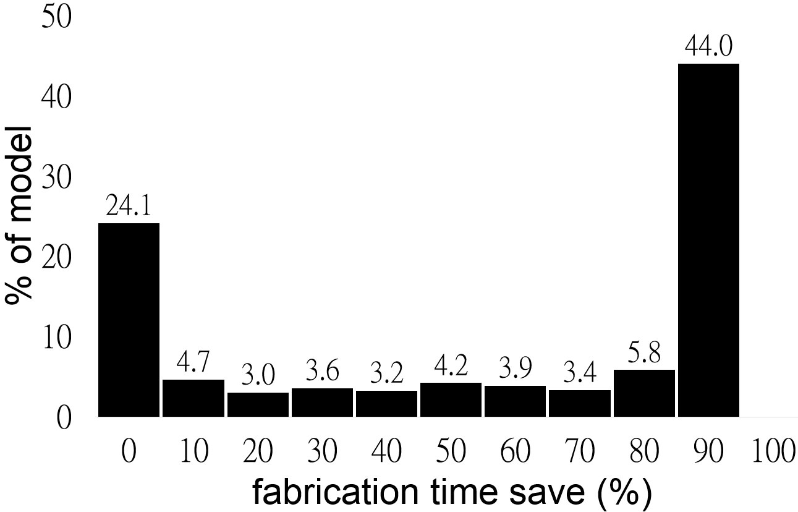
Figure 15: Fabrication time speed up.
Figure 16 shows some example objects that resulted in high speed ups (>10x). These objects consist mainly of flat pieces and contain only few parts that cannot be laser cut.
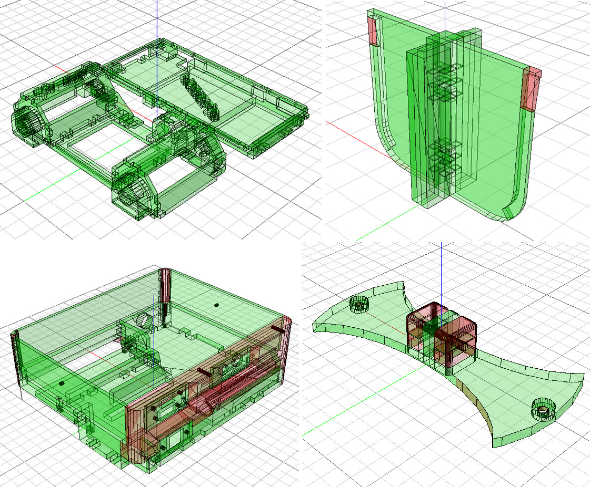
Figure 16: Some of the models that Platener fabricated 10x+ faster: (a) camera body, (b) hardware divider, (c) raspberry pi casing, (d) mount.
In contrast, Figure 17 shows two examples for which Platener was unable to produce any time savings. As expected, these objects are characterized by spherical curvature—shapes that lie outside of what Platener was designed to handle.
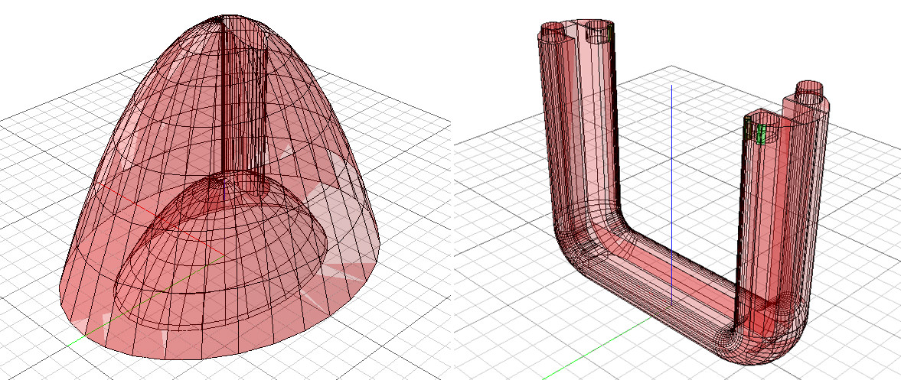
Figure 17: We would not use Platener for these objects as conversion results in no time-savings: (a) cone shaped mini heater part, (b) Kindle Fire comfort grip.
Converted objects consisted on average of 12 pieces, which we approximate with 3 minutes of assembly time.
In summary, our results show that Platener achieves faster fabrication time for many functional objects, making it a useful tool for substantially speeding up the prototyping workflow.